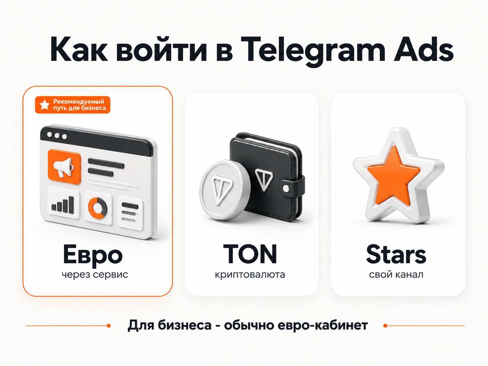
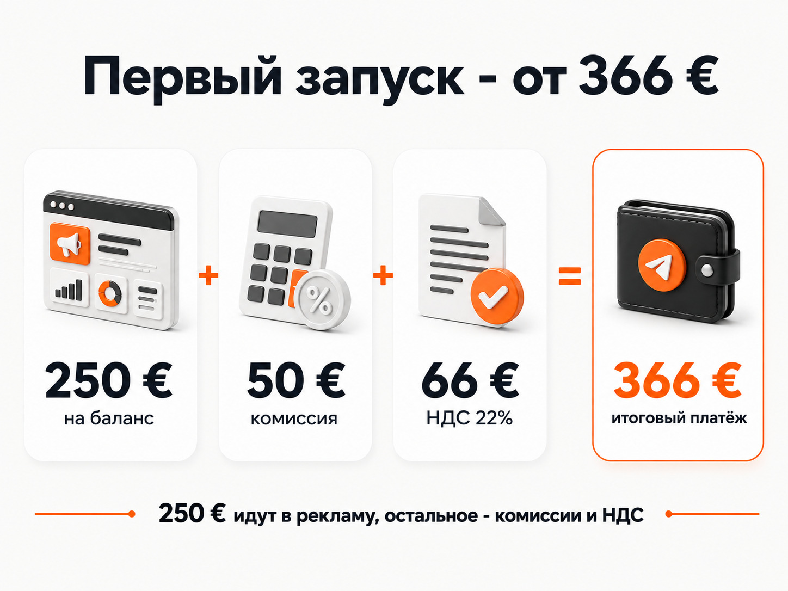
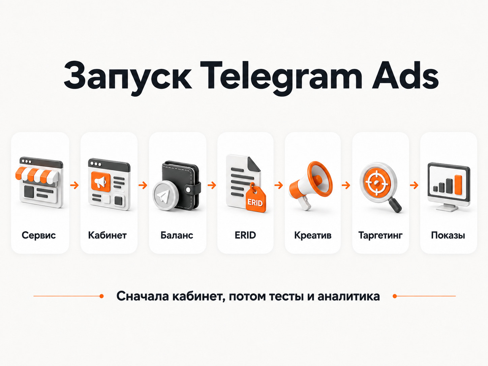

Блог о платном трафике
Как запустить Telegram Ads в 2026 году
Если вы хотите запустить Telegram Ads для рекламы на российскую аудиторию, самый практичный вариант в 2026 году - открыть евро-кабинет через сервис-посредник. Например, через eLama, OneSpot, telescope или Vitamin.tools.
Именно так работает большая часть российских рекламодателей. Вы платите в рублях российской компании, получаете рекламный кабинет Telegram Ads, закрывающие документы и инструменты для маркировки рекламы.
Есть и альтернативные варианты - кабинеты с оплатой в TON и Telegram Stars. Порог входа у них может быть значительно ниже, но и возможностей меньше. Для обычного российского бизнеса я бы рассматривал их скорее как отдельный инструмент, а не как полноценную замену евро-кабинету.
Как сейчас запускают Telegram Ads в России
На практике есть три основных варианта:
- Евро-кабинет - рубли через российского посредника, в Telegram бюджет поступает в евро. Это основной вариант для бизнеса и рекламы на РФ.
- TON-кабинет - оплата криптовалютой TON. Подходит в основном для зарубежных кампаний и отдельных задач внутри Telegram.
- Stars-кабинет - оплата Telegram Stars. Подходит владельцам каналов и ботов, небольшим собственным запускам.
Для бизнеса самый простой путь - первый.
Вы регистрируетесь в сервисе, например eLama, OneSpot, telescope или Vitamin.tools, создаете через него рекламный кабинет и пополняете баланс.
Сам посредник зарабатывает на комиссии за пополнение или сопровождение кабинета. Условия у сервисов периодически меняются, появляются акции, кешбэк и специальные тарифы, поэтому выбирать их только по одной цифре комиссии я бы не стал.
Главная ценность посредника в другом: нормальная оплата от российского ИП или юридического лица, документы, маркировка рекламы, техническая поддержка и доступ к полноценному евро-кабинету Telegram Ads.

Сколько денег нужно для запуска Telegram Ads
Для стандартного кабинета с рекламой на Россию типичный минимальный размер первого пополнения в сентябре 2026 года - 250 € непосредственно рекламного бюджета.
Но заплатить только 250 € не получится.
К рекламному бюджету добавляются комиссия сервиса и НДС.
Например, при комиссии 20% расчет выглядит так:
- 250 € - поступает непосредственно на рекламный баланс.
- 50 € - комиссия 20%.
- Далее начисляется НДС 22%.
- В результате первый платеж получается около 366 €.
То есть рекламодатель платит примерно 360-370 €, но непосредственно на рекламу получает 250 €.
Конкретная сумма зависит от сервиса, тематики и действующих акций. Например, комиссии могут отличаться для образования, недвижимости, криптовалют и некоторых других направлений. У отдельных сервисов бывают временные сниженные комиссии на первое пополнение.
Поэтому цифру 366 € лучше воспринимать как понятный ориентир для обычной тематики, а не как фиксированную стоимость Telegram Ads у любого посредника.
Повторные пополнения обычно можно делать на меньшую сумму.

Через какой сервис открыть Telegram Ads
Принципиальной разницы между основными российскими сервисами для обычного рекламодателя нет.
Из известных вариантов:
- eLama
- OneSpot
- telescope
- Vitamin.tools
Все они решают примерно одну задачу: дают российскому рекламодателю доступ к Telegram Ads без необходимости самостоятельно разбираться с оплатой иностранной площадки.
Я бы сравнивал сервисы по текущей комиссии, минимальному пополнению, качеству поддержки, автоматической маркировке и дополнительным инструментам для управления рекламой.
Условия периодически меняются. Например, один сервис может временно снизить комиссию на первое пополнение, а другой дать кешбэк или дополнительные аудитории. Поэтому фиксировать рейтинг посредников на годы вперед бессмысленно.
Как запустить рекламу в Telegram Ads через посредника
Сам процесс достаточно простой.
1. Зарегистрироваться в сервисе
Создаете аккаунт в eLama, OneSpot, telescope, Vitamin.tools или другом сервисе, через который хотите работать.
Если реклама запускается от ИП или юридического лица, указываете данные рекламодателя.
2. Создать кабинет Telegram Ads
Внутри сервиса отправляете заявку на создание рекламного аккаунта.
На этом этапе имеет значение тип кабинета и география. Для российского бизнеса обычно нужен стандартный евро-кабинет с рекламой на пользователей из России.
Не стоит открывать первый попавшийся тип аккаунта, а уже потом разбираться с ограничениями. Возможности разных кабинетов Telegram Ads отличаются.
3. Пополнить рекламный баланс
После создания кабинета вносите деньги через посредника.
Если минимальное рекламное пополнение составляет 250 €, именно эта сумма появляется внутри Telegram Ads. Комиссия и НДС оплачиваются дополнительно и в рекламный бюджет не превращаются.
Для бизнеса такой вариант удобен тем, что оплата проходит официально и можно получить бухгалтерские документы.
4. Настроить маркировку рекламы
Для российского рекламодателя этот пункт пропускать нельзя.
Крупные посредники автоматизируют передачу данных в ОРД и получение erid. Обычно рекламодателю нужно один раз правильно заполнить данные компании и связать их с рекламным аккаунтом.
После этого токен добавляется к рекламному объявлению автоматически или с минимальным количеством ручных действий.
5. Подготовить площадку, куда пойдет трафик
В зависимости от типа кабинета реклама может вести:
- в Telegram-канал
- в Telegram-бот
- на отдельный пост
- на сайт
- на другие поддерживаемые Telegram Ads точки входа
Я бы определял конечную точку еще до создания рекламы.
Например, если задача - продавать через Telegram-бота, сначала нужно нормально настроить самого бота и аналитику. Получать дешевые клики в неработающую воронку смысла нет.
В моем кейсе продвижения VPN-сервиса через Telegram Ads вся воронка находилась внутри бота. Поэтому отдельно пришлось считать не только переходы, но и запуск тестового периода, оплаты и отмены подписок.
6. Создать объявления
Классический текст Telegram Ads ограничен 160 символами.
В евро-кабинетах также доступны объявления с изображениями и видео.
Здесь не работает подход, когда в объявление пытаются запихнуть половину коммерческого предложения. Формат короткий, поэтому обычно нужно протестировать несколько разных заходов и быстро посмотреть, какой из них получает лучший отклик.
До запуска стоит проверить требования Telegram к тексту объявления и посадочной странице. Модерация достаточно строгая, особенно в медицине, финансах и других чувствительных тематиках.
Например, при рекламе медицинского центра мне приходилось отдельно перерабатывать формулировки объявлений, чтобы пройти модерацию.
7. Настроить таргетинг
Telegram Ads позволяет работать с несколькими типами таргетинга.
Можно выбирать конкретные каналы, тематические категории, аудитории и другие доступные в конкретном типе кабинета условия.
Один из самых понятных вариантов для первого теста - реклама в конкретных Telegram-каналах, где уже находится нужная аудитория.
Например, если рекламируется сервис для предпринимателей, можно отдельно протестировать несколько бизнес-каналов. Если рекламируется онлайн-курс, подобрать каналы на близкие образовательные и профессиональные темы.
Я бы не объединял десятки совершенно разных площадок в один большой тест. Иначе после запуска сложно понять, где реклама действительно работает.
8. Установить CPM и бюджет
В Telegram Ads используется модель оплаты CPM - за тысячу показов.
Вы задаете ставку и бюджет объявления, после чего система участвует в рекламном аукционе.
Слишком низкая ставка может привести к отсутствию показов. Слишком высокая - к быстрому расходованию бюджета по неадекватной цене.
Поэтому после запуска ставки нужно контролировать, а не просто выставить максимальное значение ради получения трафика.
9. Отправить рекламу на модерацию
После создания объявление проходит проверку Telegram.
Модерация оценивает сам текст, изображение или видео, рекламируемую страницу и соответствие таргетинга содержанию рекламы.
Если объявление отклонено, обычно нужно смотреть конкретную причину отказа и исправлять ее. Создавать десять одинаковых объявлений в надежде, что одно случайно пропустят, плохая стратегия.
После одобрения реклама начинает получать показы в рамках выставленного бюджета.

Можно ли запустить Telegram Ads напрямую без посредника
Можно, но здесь начинается путаница.
Если речь идет о привычном евро-кабинете для российского бизнеса, нормальной оплате в рублях, документах и удобной маркировке, на практике работают через реселлеров.
Но сама Telegram Ad Platform позволяет создавать рекламные аккаунты с криптовалютной оплатой.
Отсюда появляются TON и Stars-кабинеты.
Поэтому утверждение «в Telegram Ads вообще невозможно зайти напрямую» технически неверно. Напрямую зайти можно, но это будет уже другой вариант кабинета со своими ограничениями.
Что такое TON-кабинет
TON-кабинет оплачивается криптовалютой Toncoin.
Посредник для базового запуска не обязателен. Можно работать непосредственно через инфраструктуру Telegram.
Плюсы очевидны: ниже финансовый порог входа и не нужно платить российскому реселлеру за обычное пополнение.
Но функциональность отличается от стандартного евро-кабинета. Есть ограничения по географии и части таргетингов. Для рекламы непосредственно на российскую аудиторию такой кабинет сейчас не является нормальной заменой евро-кабинету.
Поэтому выбирать TON только ради попытки сэкономить 20% комиссии я бы не рекомендовал. Сначала нужно проверить, позволяет ли этот тип кабинета вообще решить вашу рекламную задачу.
Что такое Stars-кабинет
Еще один вариант - Telegram Stars.
Telegram разрешает владельцам каналов и ботов использовать заработанные Stars для покупки рекламы своего же канала или бота.
Здесь есть серьезное ограничение: Stars привязаны к конкретному объекту. Если звезды заработал определенный канал, использовать их как универсальный рекламный кошелек для любых клиентских проектов нельзя.
Кроме того, полученные Stars становятся доступными для рекламных расходов не сразу. Telegram предусматривает технический период ожидания до 21 дня.
Это интересный вариант для владельца собственного Telegram-проекта, но для агентства или бизнеса, который хочет регулярно запускать разные рекламные кампании, евро-кабинет намного удобнее.
Какой кабинет Telegram Ads выбрать
Для российского бизнеса я бы в большинстве случаев выбирал стандартный евро-кабинет через посредника.
Да, приходится оплачивать НДС и комиссию. Зато получаем нормальный рабочий инструмент, документы, маркировку и более широкий набор возможностей.
TON имеет смысл рассматривать отдельно для зарубежной аудитории и проектов, которым подходит криптовалютная инфраструктура Telegram.
Stars интереснее владельцам собственных каналов и ботов, у которых уже накапливается внутренняя валюта Telegram.
Это три разных способа закупки рекламы, а не просто три разных варианта оплаты одного и того же кабинета.
Что с рекламой в Telegram в России в 2026 году
Здесь есть отдельный юридический нюанс.
В марте 2026 года ФАС сообщила о переходном периоде для рекламы в Telegram и YouTube до конца 2026 года. В течение этого периода ведомство заявило, что меры ответственности за распространение рекламы на этих ресурсах применяться не будут.
При этом сама ситуация связана с ограничениями работы Telegram в России и законодательным запретом рекламы на ресурсах, доступ к которым ограничен.
Поэтому запуск Telegram Ads в сентябре 2026 года технически продолжает работать, сервисы открывают и пополняют рекламные кабинеты, но при планировании рекламы на длительный срок нужно учитывать, что после окончания переходного периода правила могут измениться.
Что делать после запуска
Создать кабинет и получить первые показы - самая простая часть работы.
Дальше нужно понимать, что именно приносит реклама.
Для канала это может быть стоимость подписчика. Для бота - стоимость запуска бота, заявки или оплаты. Для сайта - лиды и продажи по данным аналитики.
Если оценивать Telegram Ads только по CTR и цене клика, легко оставить работающими кампании, которые приводят много дешевого, но бесполезного трафика.
Поэтому еще до первого пополнения кабинета нужно определить конечную цель рекламы и способ ее измерения.
Сам запуск выглядит просто: выбрать посредника, открыть евро-кабинет, пополнить его, настроить маркировку, создать объявления и отправить их на модерацию.
Основная работа начинается уже после этого - когда приходится тестировать каналы, аудитории, тексты, ставки и отключать то, что не приводит к реальному результату.